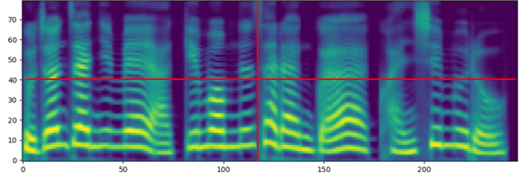
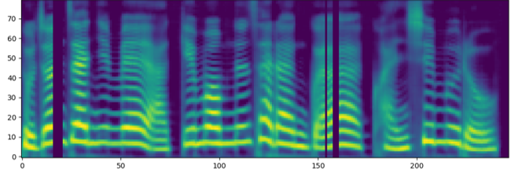
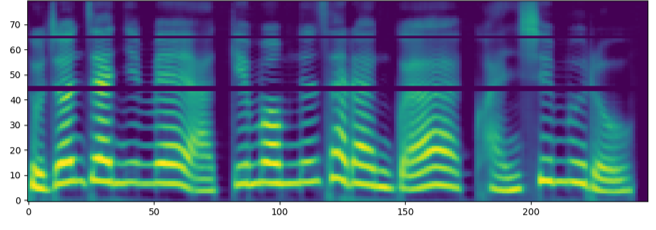
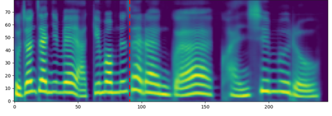
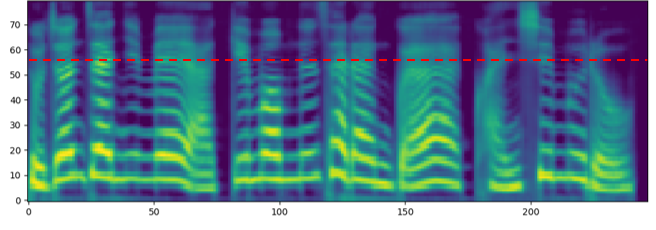
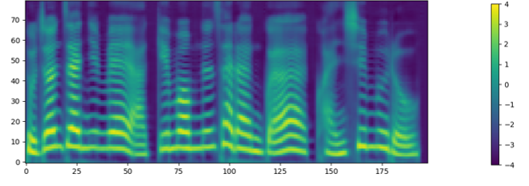
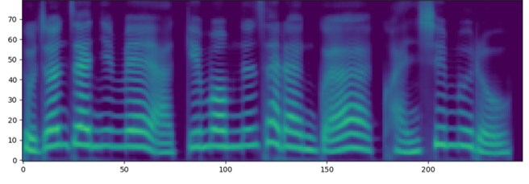

Paper: arXiv
Authors: Yeong-Tae Hwang, Hyemin Cho, Hongsun Yang
Contents
sentence : 우리는 오늘, 우리 조선이 독립국이며 조선인이 자주민임을 선언합니다.
Original |
||||||||
|  | ||||||||
(1) Time masking (Number of Masking=1) |
T=2 | T=4 | T=6 | T=8 | T=10 | T=12 | T=14 | T=16 |
|  | ||||||||
(2) Frequency masking (Number of Masking=1) |
F=2 | F=4 | F=6 | F=8 | F=10 | F=12 | F=14 | F=16 |
|  | ||||||||
(3) Time warping |
W=0.2 | W=0.4 | W=0.6 | W=0.8 | W=0.10 | W=0.12 | W=0.14 | W=0.16 |
|  | ||||||||
(4) Frequency warping |
H=2 | H=4 | H=6 | H=8 | H=10 | H=12 | H=14 | H=16 |
|  | ||||||||
(5) Time length control |
L=0.02 | L=0.04 | L=0.06 | L=0.08 | L=0.10 | L=0.12 | L=0.14 | L=0.16 |
|  | ||||||||
(6) Volume control |
λ=0.02 | λ=0.04 | λ=0.08 | λ=0.16 | λ=0.32 | λ=0.64 | ||
|  |
sentence : 이 열차는 잠시 후 서울역에 도착합니다.
Volumes |
1 | 1/2 | 1/4 | 1/8 | 1/16 |
10**5 iteration |
|||||
Early Stopping |
| Time Length Control both | Time Length Control | Time Masking | Time Warping | Frequency Masking | Frequency Warping | Loudness Control | |
10**5 iteration |
|||||||
Early Stopping |
| Time Length Control + Time Warping | Time Length Control both + Time Warping | Time Length Control + Loudness Control | Time Length Control both + Loudness Control | Time Length Control + Time Warping + Loudness Control | Time Length Control both + Time Warping + Loudness Control | |
10**5 iteration |
||||||
Early Stopping |
| Original | Time Length Control | Frequency Warping | Time Length Control + Frequency Warping | |
Sentence 1: |
||||
Sentence 2: |